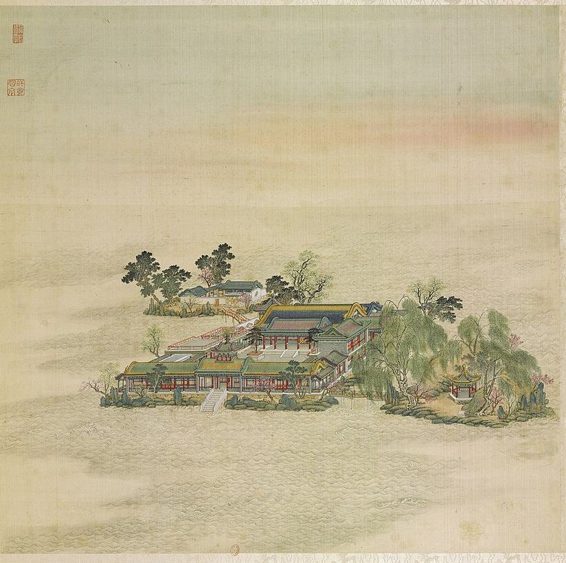
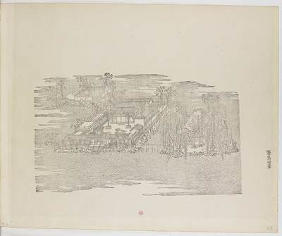
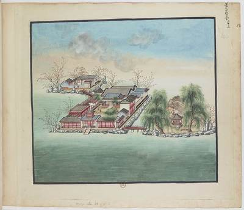
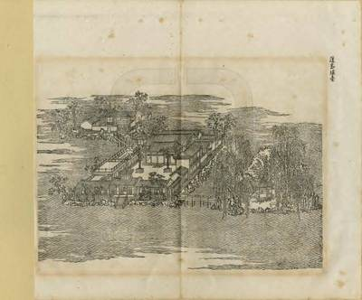
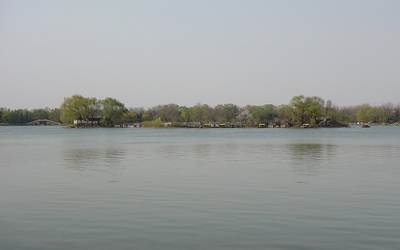
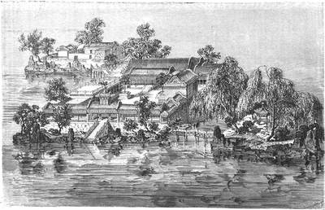
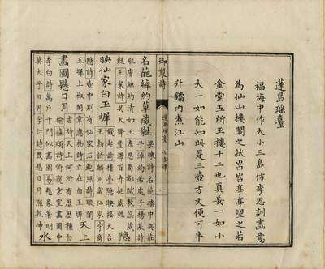

蓬岛瑶台Paradise Island of the Enameled Green Terrace


What it was
蓬岛瑶台 Pengdao Yaotai, "Paradise Island of the Enameled Green Terrace", stands on three islands in the middle of 福海 Fuhai (S05 j82:16b, E1933). The central island has a three-bay gate facing south, a seven-bay main hall, 畅襟楼 Changjin Lou and 神洲三岛 Shenzhou Sandao before it to the east and west, and 随安室 Sui'an Shi and 日日平安报好音 on the east and west sides (S05 j82:16b, E1933); a bridge south-east leads to the east island with the pavilion 瀛海仙山 Yinghai Xianshan, a bridge north-west to the north island with a three-bay hall (j82:16b). Under Yongzheng it was called 蓬莱洲 Penglai Zhou; the new name dates from 1744 (S05 j80:10a, j82:16b). Malone: a small palace court with glazed tile on the central island, the north-west island also built over, the east island a rustic retreat with pavilion, rocks and trees (S02 p.93, E1936). On the dragon-boat day under Qianlong the emperor sat in the pavilion 望瀛洲 Wang Yingzhou and the empress dowager watched the race from 蓬岛瑶台, east of it (S202 j14, E1889). A list drawn from 刘敦桢 Liu Dunzhen (1933) puts 蓬岛瑶台 among the seventeen or so places where buildings still stood after the burning of 1860 (E0451); when they were lost is not stated in the texts read.
The leaf of 1744, its poem and preface
Leaf 32 of the 1744 album (P0032). Qianlong's preface (S40, E1925; S05 j82:17a): '福海中作大小三島仿李思訓畫意為仙山樓閣之狀' ('in the Sea of Blessings three islands, large and small, were made, after the paintings of 李思训 Li Sixun, as towers of the immortals on their peaks'), looking like the 'five golden halls and twelve jade towers'. He adds that large and small are one: know this, and here are the sacred isles, and one may boil rivers and mountains in a half-pint pot. The poem gives famous flowers, white jade steps, and 'towers and halls in the water, steeped in 琉璃' (水中樓閣浸琉璃), 琉璃 being both glaze and glass-clear water.
How it changed before 1860
The dragon-boat feast moved from 望瀛洲 and 蓬岛瑶台 to 澄虚榭 Chengxu Xie under Jiaqing; the race was still held in the early Daoguang years and then stopped (S202 j14, E1889). S360 files 28 dated items under 福海, 1741-1858, 26 of them poems, on boating, the view and the summer heat (E2365): the lake was in use to the end. No dated rebuilding was found in the texts read.
Building by building
| Hall | Bays | Roof | Storeys | Faces | Sources |
|---|---|---|---|---|---|
| 门 Men | 3 | 歇山 or gable with upturned ends, single eaves | 1 | S | S01, S05, S08 |
| 正殿 Zhengdian | 7 | two roof levels: an upper roof in blue (dark) glazed tile with yellow ridge and yellow rolled ends, and a lower roof of purplish-brown tile in front: either 重檐 double eaves or a front hall abutting the main hall; I cannot tell which | 1 | S | S01, S05, S08, S43, S361 |
| 畅襟楼 Changjin Lou | about 3 on the side seen | 歇山, green glazed with yellow ridge | 2 | S01, S05, S08, S201, S360 | |
| 神洲三岛 Shenzhou Sandao | S01, S05 | ||||
| 随安室 Sui'an Shi | 1 | S05 | |||
| 日日平安报好音 Riri Ping'an Bao Haoyin | 1 | S05 | |||
| 瀛海仙山亭 Yinghai Xianshan Ting | 1 | 攒尖 pyramid, hexagonal, single eaves | 1 | S01, S05, S08 | |
| 北岛正宇 Beidao zhengyu | 3 | gable and 歇山, grey | 1 | S | S01, S05, S08 |
and 3 buildings drawn on the plan without a name
The pictures
The woodcuts of 1745


The gouaches, 1750-92


The lithograph of 1887


Today


Other pictures




Not ours to copy, at the holder
- Sirén, Enligt text under Pl. 184a Kinas trädgårdar Vol. I: Yuanmingyuan. Pengdao Yaotai, ”De Odödligas Öar och Gröna Ter View at kulturarvsdata.se
- Sirén, Enligt text under Pl. 184b Kinas trädgårdar Vol. I: Yuanmingyuan. Pengdao Yaotai, ”De Odödligas Öar och Gröna Ter View at kulturarvsdata.se
Every picture, text and drawing, hall by hall, is in the 3D view's panel.
The garden around it
On P0032 the main island carries a yellow-roofed gate with green-tiled wings on a stone base and a white stair to the water, the main hall behind with a blue upper roof trimmed in yellow and a purple-brown lower roof, a green-roofed two-storey 楼 on the east and a railed terrace on the west; the north-west islet is grey-tiled behind white walls and linked by an arched timber bridge; the east islet carries a hexagonal pavilion among willows. Rocks edge every shore. (S08 P0032)
What survives
The islands of 蓬岛瑶台 survive in 福海 Fuhai, whose shape is kept (S146, S148). Modern structures stand on them: seen from the shore, a glazed pyramidal pavilion roof and a white-walled hall with a grey roof on a rock base (P0791, P0387). No excavation report of the islands was found (S946).
Excavations and surveys
No excavation or survey of its remains found in what we read.
Reconstructions by others
Modern interpretation, not evidence, and never a source for a size or a position here.
- “飞跃圆明园四十景”, MR glasses, 2026 服贸会 at Shougang (中央美术学院 人工智能与数字文化遗产研究中心, AR/VR) View at cn.chinadaily.com.cn
- 蓬岛瑶台 (caption in a gallery) (, render) View at thepaper.cn
- 蓬岛瑶台 (second image), image 756 in a gallery (, render) View at thepaper.cn
- Abb. 22, 蓬岛瑶台 Pengdao Yaotai (Szene 146), Lage und Grundriss (Shuang Zhang, drawing) View at doi.org
- Multi-dimensional Element Graph Construction and Spatial Representation of Gardens in the Fuhai Area of Yuanmingyuan (Yu View at doi.org
What is known of its size
| Part | What | Size | How | Grade | Source |
|---|---|---|---|---|---|
| the scene's outline on the plan | Extent, long side | 167 m ± 10 | b plan or ruin | C | S01, layers/scenes_1860, UTM 50N, minimum rotated rectangle |
| the scene's outline on the plan | Extent, short side | 80 m ± 10 | b plan or ruin | C | S01, layers/scenes_1860, UTM 50N, minimum rotated rectangle |
| island I020 (蓬岛瑶台) | Island, short side | 60 m ± 10 | b plan or ruin | B | S01, layers/islands_1860, UTM 50N, minimum rotated rectangle |
| island I020 (蓬岛瑶台) | Island, long side | 97 m ± 10 | b plan or ruin | B | S01, layers/islands_1860, UTM 50N, minimum rotated rectangle |
| the scene's outline on the plan | Area | 6400 m² ± 600 | b plan or ruin | C | S01, layers/scenes_1860, UTM 50N, polygon area |
All 9 figures
| Part | What | Size | How | Grade | Source |
|---|---|---|---|---|---|
| island palace | Rooms | 0 m | a survey or Qing drawing | C | S911, p.16 |
| rock island under the palace | Island height above water | 1.95 m ± 1 | a survey or Qing drawing | C | S911, pp.16-17 |
| island I020 (蓬岛瑶台) | Island area | 4400 m² ± 400 | b plan or ruin | B | S01, layers/islands_1860, UTM 50N, polygon area |
| water inside the scene's outline | Water inside the outline | 770 m² ± 80 | b plan or ruin | B | S01, layers/water_1860 within layers/scenes_1860 |
Sources cited on this page (14)
- S01 Plan of the Yuanmingyuan Imperial Garden-Palace, unknown artist, three hanging scrolls, ink and colour on paper, 177 × 253 cm together
- S02 Carroll Brown Malone, History of the Peking Summer Palaces under the Ch'ing Dynasty, Illinois Studies in the Social Sciences XIX, Urbana 1934; reprint Paragon 1966
- S05 《日下旧闻考》 Rixia jiuwen kao (Yu Minzhong et al.), juan 80-85 (Round 20 also juan 76-79, 84-87 and 98-100: the gardens round ours, the roads, 郊坰), Kanripo KR2k0036, WYG base
- S08 圆明园四十景图 Forty Scenes album, Tangdai and Shen Yuan, 40 leaves, BnF Estampes RESERVE FT 6-B-9, one BnF record per leaf; poems Qianlong, calligraphy Wang Youdun
- S40 御制圆明园四十景诗 / 图咏
- S43 圆明园戏场探微, 圆明园遗址公园 site
- S146 景观中国, 修复斥资4.6亿 (宗天亮)
- S148 北京青年报 via 雅昌 2013; 徐百柯 via 爱思想 2005; 新浪财经 2005
- S201 御製詩集 (弘曆), 初集 to 餘集, WYG Siku text, Kanripo KR4f0005
- S202 吳振棫 養吉齋叢錄, 校點 text as held in the 殆知閣 corpus; only 卷一 to 卷十七 are in this copy, simplified characters
- S360 圆明园管理处 (attachment on the park's site), 圆明园百景史事分景汇编: dated records and imperial poems scene by scene, compiled from the Veritable Records and the emperors' collected poem
- S361 何瑜 (cover name; 编著 as on the volumes), 圆明园五朝御制诗文集注, vols 2-4 of the first four volumes, PDF on the park's site: the imperial poems and essays of five reigns by scene, wit
- S911 Jean-Denis Attiret, lettre à M. d'Assaut, Pékin, 1er novembre 1743, in Lettres édifiantes et curieuses, écrites des missions étrangères, XXVII. Recueil, Paris: Frères Gué
- S946 贾贯峰 (圆明园博物馆), 《“十四五”时期圆明园博物馆建设模式探索》, 《圆明园研究》 83期, on the park site